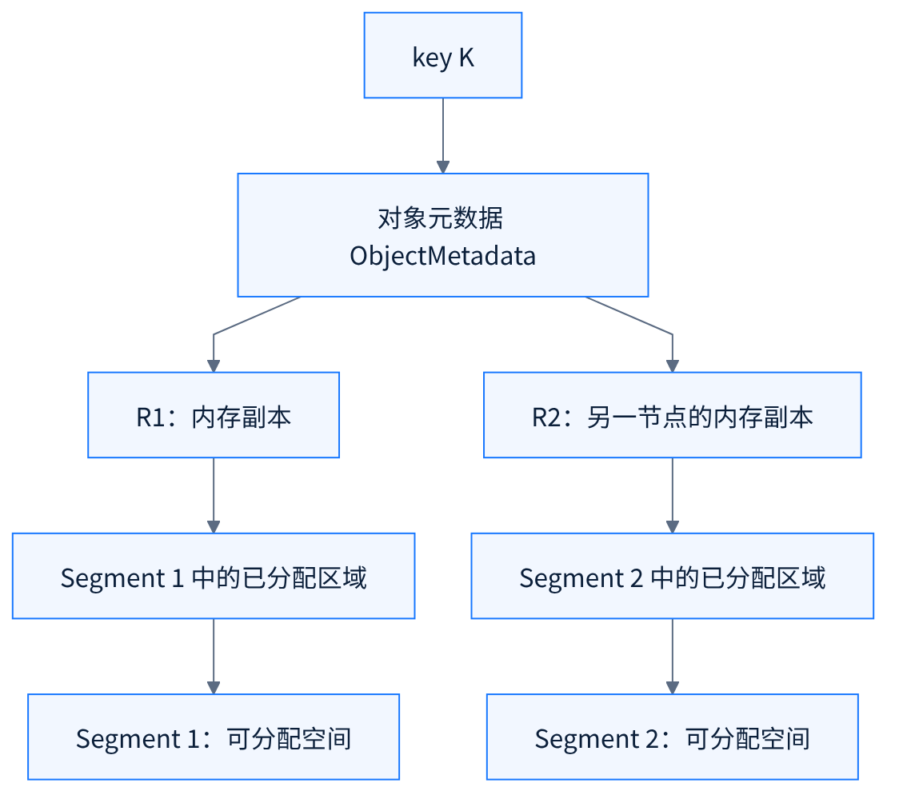
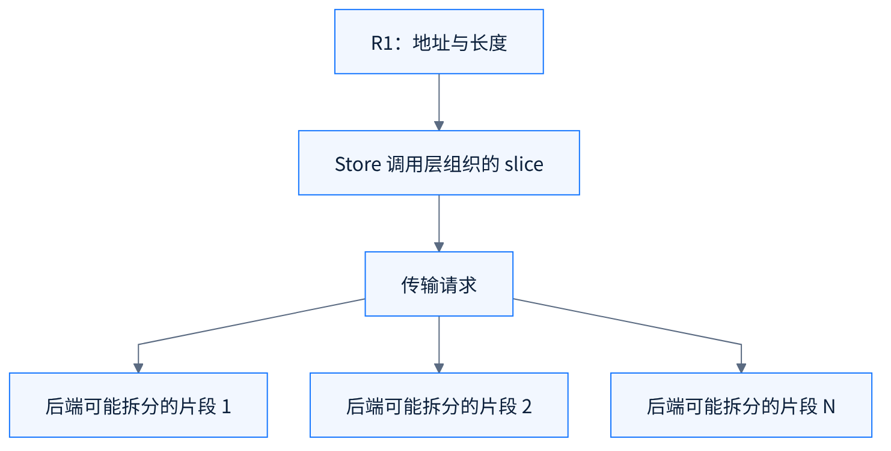

摘要：key K 在 Master 里变成对象元数据，R1、R2 各占一段内存。对象、副本、Segment、Slice 分别回答什么？
实例 A 算完一段前缀 KV，把数据以 key K 写入共享缓存。
从 A 调用 Put 的角度看，这只是"写一个对象"。但在 Mooncake 内部，这个动作经过了好几层结构：key 先变成元数据，元数据下面挂着副本，副本指向一段分配好的内存，传输时又被组织成 slice。
如果把这些结构都笼统理解为"一块内存"，后面的可见性、淘汰、SSD 下沉就会越来越难读。
它们各自回答一个具体问题：
应用通过 key 访问对象。Master 收到 PutStart 后，为 key 建立 ObjectMetadata。
这份元数据记录对象的身份与生命周期信息：谁发起的写入、什么时候开始、对象多大、数据类型、读保护截止时间，以及副本列表。
对象元数据只存在于 Master 的内存态里。客户端拿到的不是这个结构本身，而是副本列表序列化后的描述。
同一个对象可以有多个副本。为了说清楚，本篇把两份内存副本记作 R1、R2。
R1、R2 可能位于不同存储节点，各自占据一段分配好的内存。它们的内容相同，但地址不同，状态也可能不同步——一个已经 COMPLETE，另一个仍在 PROCESSING。

图注：R1、R2 是同一对象的两个副本，各自只占用所在 Segment 的一段已分配区域。Segment 提供可分配空间，不等于一个对象，也不等于一个副本。 对象是否存在，与某一份内存副本是否存在，并不是同一件事。
内存副本被淘汰后，如果还有磁盘副本仍然有效，对象仍可能被读取。磁盘副本是可选的另一种介质，它不是内存副本的别名；本篇的主线仍是 R1、R2 这两份内存副本。
存储节点向集群贡献一段连续内存，Master 侧把它登记为一个 Store Segment：起点、大小、传输端点等。
分配器再从这个范围里划出一块，交给具体副本使用。所以对象通常不会独占整个 Segment，副本只是其中一段已分配区域。
这里还有一个容易混淆的地方：Store 与 Transfer Engine 都会出现 Segment 概念，但语境不同。
阅读源码或配置时，要先确认讨论的是哪一层，不能只凭名字把它们直接等同。
副本描述告诉客户端"数据在哪、有多长"。真正发起传输时，还要把这些范围组织成 slice。
Store 层的 slice 是一个连续内存区域：指针加长度。调用方把目标 buffer 切开，组成 slice 列表；Master 按 slice 长度分配空间，传输层再按需搬运。

图注：slice 数量为示意。Store 调用层如何组织 slice、传输后端是否再拆分，取决于实际路径，不固定一一对应。 因此不能假设：
一个对象对应一个请求，一个请求对应一个网络操作。
实际关系可能是一对多，而且不同层次切分的目的并不相同。
这比"地址在哪里"更重要。
内存副本持有 AllocatedBuffer。副本被删除时，buffer 析构，通过弱引用找到所属分配器，把空间归还。
这条链上有几个边界：
读 lease 保护的是另一层：普通读取窗口内对象不被删除。lease 的细节留到第4篇；后台引用与淘汰策略留到第9篇。
R1 已经分到了位置。B 什么时候才能读它？
源码延伸：原系列篇4；ObjectMetadata、Replica、AllocatedBuffer、Segment。版本基线为 v0.3.13.post1。
[源码解析版](../../04-core-data-structures.md) · [系列目录与排版说明](README.md)
[上一篇](01-shared-kv-cache.md) · [下一篇](03-put-visibility.md)